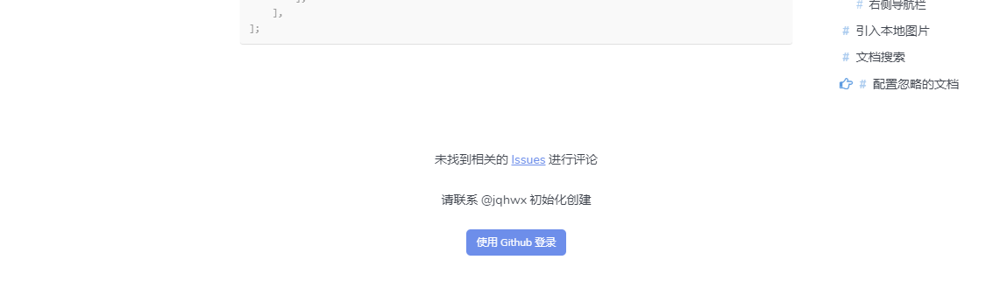

评论系统
Gitalk是一个基于Github Issue的评论插件，开发者无需自己的服务器即可让自己的网站拥有评论系统，非常好用。
Dcat Page集成了Gitalk评论系统，用户可以通过配置文件控制是否使用该评论系统。
注册Github账号
Gitalk的评论功能是基于Github Issue实现的，所以必须要注册一个Github账号才能使用，Github账号只需要有邮箱就能注册，非常简单，这里就不赘述了。
{tip} 需要注意的是，给评论系统用的
github账号尽量使用新注册的账号，不要使用常用账号！！！因为在使用Gitalk的过程中会暴露clientID和clientSecret，有一定的安全性问题。
创建GitHub Application
注册完Github账号之后进入这个链接https://github.com/settings/applications/new创建GitHub Application。
创建完之后就可以看到Client ID和Client Secret两个参数
创建Github仓库
上述步骤完成之后就可以创建一个仓库来存储评论了，这一步非常简单，创建一个空的公仓即可，这里就不赘述了。
启用评论系统
在应用目录({root}/resources/dcat-page/{应用目录})打开配置文件config.php，加上如下配置
return [
...
'comment' => [
'enable' => true, // 开启评论系统
'clientID' => 'f50cc212f807789bxxxx', // github application client_id
'clientSecret' => '6f39dccb1a24b057f0915d49b841e4b09a39xxxx', // github application client_secret
'repo' => 'xxx', // github仓库名称
'owner' => 'jqhwx', // github仓库所有者，可以是个人或者组织。
'admin' => ['jqhwx'], // github仓库的所有者和合作者 (对这个 repository 有写权限的用户)。
'language' => 'zh-CN', // 支持 [en, zh-CN, zh-TW]。
'perPage' => 15, // 每次加载的数据大小，最多 100。
'pagerDirection' => 'first', // 评论排序方式， last为按评论创建时间倒叙，first为按创建时间正序。
... // 支持更多gitalk配置参数，请参考https://github.com/gitalk/gitalk
],
];然后刷新页面就能看到评论系统了
创建Github Issue
评论系统启用成功之后，第一次需要手动为每个页面创建一条Github Issue，然后你的网站用户才可以在上面进行自由评论。
创建的过程也非常简单，只需要用该Github仓库的所属账号进行授权登录，然后每个页面都点击进去一次即可。
{tip} 记住第一次进入一个页面不要连续刷新，只需要点进去一次就行，否则可能会创建好几条一模一样的
Issue。
Issue创建成功后，用户看到的页面如下